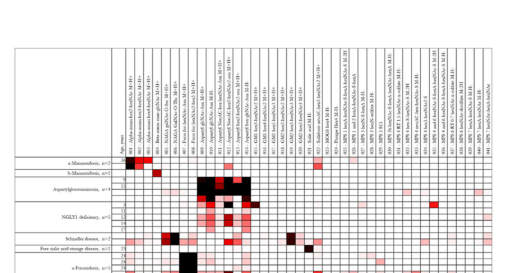

Alpha-N-acetylgalactosaminidase deficiency type 3 (Schindler disease type III) is the intermediate form of NAGA deficiency, an autosomal recessive lysosomal storage disorder caused by biallelic NAGA variants that abolish lysosomal alpha-N-acetylgalactosaminidase. Enzyme deficiency causes accumulation of incompletely degraded glycoconjugates bearing terminal alpha-N-acetylgalactosamine, producing a clinically heterogeneous phenotype of intermediate severity between infantile Schindler disease (type 1) and adult Kanzaki disease (type 2), with variable epilepsy, behavioral difficulties, and psychomotor retardation. The extreme clinical heterogeneity among patients sharing identical NAGA genotypes implies that factors beyond NAGA modify disease expression.
Ask a research question about NAGA Deficiency Type 3. OpenScientist will conduct autonomous deep research using the Disorder Mechanisms Knowledge Base and PubMed literature (typically 10-30 minutes).
Do not include personal health information in your question. Questions and results are cached in your browser's local storage.
name: NAGA Deficiency Type 3
creation_date: "2026-06-13T00:00:00Z"
description: >-
Alpha-N-acetylgalactosaminidase deficiency type 3 (Schindler disease type III) is the
intermediate form of NAGA deficiency, an autosomal recessive lysosomal storage disorder
caused by biallelic NAGA variants that abolish lysosomal alpha-N-acetylgalactosaminidase.
Enzyme deficiency causes accumulation of incompletely degraded glycoconjugates bearing
terminal alpha-N-acetylgalactosamine, producing a clinically heterogeneous phenotype of
intermediate severity between infantile Schindler disease (type 1) and adult Kanzaki
disease (type 2), with variable epilepsy, behavioral difficulties, and psychomotor
retardation. The extreme clinical heterogeneity among patients sharing identical NAGA
genotypes implies that factors beyond NAGA modify disease expression.
synonyms:
- alpha-N-acetylgalactosaminidase deficiency type 3
- Schindler disease type III
- intermediate Schindler phenotype
- NAGA deficiency, intermediate
category: Mendelian
disease_term:
preferred_term: alpha-N-acetylgalactosaminidase deficiency type 3
term:
id: MONDO:0019264
label: alpha-N-acetylgalactosaminidase deficiency type 3
mappings:
mondo_mappings:
- term:
id: MONDO:0019264
label: alpha-N-acetylgalactosaminidase deficiency type 3
mapping_predicate: skos:exactMatch
mapping_source: MONDO
parents:
- Lysosomal Storage Disorder
inheritance:
- name: Autosomal recessive
inheritance_term:
preferred_term: Autosomal recessive inheritance
term:
id: HP:0000007
label: Autosomal recessive inheritance
evidence:
- reference: PMID:31890708
reference_title: "A New Case of Schindler Disease."
supports: SUPPORT
evidence_source: HUMAN_CLINICAL
snippet: "Schindler disease is an autosomal recessive, inherited LSD caused by defective or non-existent activity of the enzyme α-N-acetylgalactosaminidase (α-NAGA)"
explanation: NAGA deficiency, including the intermediate type 3, is inherited in an autosomal recessive manner.
pathophysiology:
- name: Alpha-N-Acetylgalactosaminidase Deficiency
conforms_to: "lysosomal_substrate_accumulation#Lysosomal Hydrolase or Cofactor Deficiency"
description: >-
Biallelic NAGA variants abolish lysosomal alpha-N-acetylgalactosaminidase, the hydrolase
that removes terminal alpha-N-acetylgalactosamine residues from glycopeptides and
glycolipids.
gene:
preferred_term: NAGA
term:
id: hgnc:7631
label: NAGA
biological_processes:
- preferred_term: glycoprotein catabolic process
term:
id: GO:0006516
label: glycoprotein catabolic process
modifier: DECREASED
evidence:
- reference: PMID:14685826
reference_title: "Structural and immunocytochemical studies on alpha-N-acetylgalactosaminidase deficiency (Schindler/Kanzaki disease)."
supports: SUPPORT
evidence_source: HUMAN_CLINICAL
snippet: "Alpha-N-acetylgalactosaminidase (alpha-NAGA) deficiency (Schindler/Kanzaki disease) is a clinically and pathologically heterogeneous genetic disease with a wide spectrum including an early onset neuroaxonal dystrophy (Schindler disease) and late onset angiokeratoma corporis diffusum (Kanzaki disease)"
explanation: Loss of alpha-NAGA is the primary enzymatic defect across the NAGA-deficiency spectrum, including the intermediate type 3.
downstream:
- target: Lysosomal Glycoconjugate Accumulation
description: Enzyme deficiency leads to lysosomal accumulation of undegraded glycoconjugates.
- name: Lysosomal Glycoconjugate Accumulation
conforms_to: "lysosomal_substrate_accumulation#Lysosomal Substrate Accumulation"
description: >-
Failure to cleave terminal alpha-N-acetylgalactosamine causes lysosomal accumulation of
incompletely degraded glycoconjugates and cytoplasmic vacuolisation across multiple cell
types, driving the intermediate-severity multisystem phenotype.
cell_types:
- preferred_term: neuron
term:
id: CL:0000540
label: neuron
evidence:
- reference: PMID:11313741
reference_title: "Human alpha-N-acetylgalactosaminidase (alpha-NAGA) deficiency: no association with neuroaxonal dystrophy?"
supports: SUPPORT
evidence_source: HUMAN_CLINICAL
snippet: "angiokeratoma and clear vacuolisation in various cell types"
explanation: Lysosomal substrate storage produces cytoplasmic vacuolisation in multiple cell types.
downstream:
- target: Intermediate clinical severity
description: Multisystem lysosomal storage produces the intermediate type 3 NAGA-deficiency phenotype.
causal_link_type: INDIRECT_UNKNOWN_INTERMEDIATES
- target: Seizures
description: Neuronal lysosomal storage contributes to epilepsy in the intermediate NAGA-deficiency phenotype.
causal_link_type: INDIRECT_UNKNOWN_INTERMEDIATES
- target: Behavioral difficulties
description: Neuronal lysosomal storage contributes to behavioral abnormalities.
causal_link_type: INDIRECT_UNKNOWN_INTERMEDIATES
- target: Autism
description: Neuronal lysosomal storage contributes to autistic neurodevelopmental features in type 3 disease.
causal_link_type: INDIRECT_UNKNOWN_INTERMEDIATES
- target: Psychomotor retardation
description: Neuronal lysosomal storage contributes to impaired psychomotor development.
causal_link_type: INDIRECT_UNKNOWN_INTERMEDIATES
- target: Intellectual disability
description: Neuronal lysosomal storage contributes to impaired cognitive development.
causal_link_type: INDIRECT_UNKNOWN_INTERMEDIATES
- target: Congenital cataract
description: Multisystem lysosomal storage can include developmental cataract.
causal_link_type: INDIRECT_UNKNOWN_INTERMEDIATES
- target: Strabismus
description: Multisystem lysosomal storage can include ocular motor abnormalities.
causal_link_type: INDIRECT_UNKNOWN_INTERMEDIATES
- target: Hypertrophic cardiomyopathy
description: Multisystem lysosomal storage can involve cardiac muscle.
causal_link_type: INDIRECT_UNKNOWN_INTERMEDIATES
- target: Hepatomegaly
description: Visceral lysosomal storage can enlarge the liver.
causal_link_type: INDIRECT_UNKNOWN_INTERMEDIATES
phenotypes:
- name: Intermediate clinical severity
description: >-
Type 3 is classically an intermediate phenotype between the severe infantile (type 1) and
mild adult (type 2) forms.
phenotype_term:
preferred_term: Abnormal nervous system physiology
term:
id: HP:0012638
label: Abnormal nervous system physiology
evidence:
- reference: PMID:31890708
reference_title: "A New Case of Schindler Disease."
supports: SUPPORT
evidence_source: HUMAN_CLINICAL
snippet: "Schindler disease type III shows an intermediate phenotype between types I and II"
explanation: Establishes type 3 as the intermediate-severity form of NAGA deficiency.
- name: Seizures
description: Epilepsy of variable degree in the intermediate group.
phenotype_term:
preferred_term: Seizure
term:
id: HP:0001250
label: Seizure
evidence:
- reference: PMID:11313741
reference_title: "Human alpha-N-acetylgalactosaminidase (alpha-NAGA) deficiency: no association with neuroaxonal dystrophy?"
supports: SUPPORT
evidence_source: HUMAN_CLINICAL
snippet: "a very heterogeneous group of patients with various degrees of epilepsy/behavioural difficulties/psychomotor retardation"
explanation: Epilepsy is a feature of the intermediate NAGA-deficiency group.
- name: Behavioral difficulties
description: Behavioral abnormalities in the intermediate group.
phenotype_term:
preferred_term: Atypical behavior
term:
id: HP:0000708
label: Atypical behavior
evidence:
- reference: PMID:11313741
reference_title: "Human alpha-N-acetylgalactosaminidase (alpha-NAGA) deficiency: no association with neuroaxonal dystrophy?"
supports: SUPPORT
evidence_source: HUMAN_CLINICAL
snippet: "a very heterogeneous group of patients with various degrees of epilepsy/behavioural difficulties/psychomotor retardation"
explanation: Behavioral difficulties are part of the intermediate NAGA-deficiency phenotype.
- name: Autism
description: Autism is reported by Orphanet as a very frequent neurodevelopmental feature of NAGA deficiency type 3.
phenotype_term:
preferred_term: Autism
term:
id: HP:0000717
label: Autism
evidence:
- reference: ORPHA:79281
supports: SUPPORT
evidence_source: HUMAN_CLINICAL
snippet: "HP:0000717 | Autism | Very frequent (99-80%)"
explanation: Orphanet reports autism as a very frequent NAGA deficiency type 3 phenotype.
- name: Psychomotor retardation
description: Variable psychomotor / global developmental delay.
phenotype_term:
preferred_term: Global developmental delay
term:
id: HP:0001263
label: Global developmental delay
evidence:
- reference: PMID:11313741
reference_title: "Human alpha-N-acetylgalactosaminidase (alpha-NAGA) deficiency: no association with neuroaxonal dystrophy?"
supports: SUPPORT
evidence_source: HUMAN_CLINICAL
snippet: "a very heterogeneous group of patients with various degrees of epilepsy/behavioural difficulties/psychomotor retardation"
explanation: Psychomotor retardation is part of the intermediate NAGA-deficiency phenotype.
- name: Intellectual disability
description: Intellectual disability is reported as a very frequent feature of the NAGA deficiency type 3 phenotype.
phenotype_term:
preferred_term: Intellectual disability
term:
id: HP:0001249
label: Intellectual disability
evidence:
- reference: ORPHA:79281
supports: SUPPORT
evidence_source: HUMAN_CLINICAL
snippet: "HP:0001249 | Intellectual disability | Very frequent (99-80%)"
explanation: Orphanet reports intellectual disability as a very frequent NAGA deficiency type 3 phenotype.
- name: Congenital cataract
description: Congenital cataract reported in an intermediate-form index patient.
phenotype_term:
preferred_term: Congenital cataract
term:
id: HP:0000519
label: Developmental cataract
evidence:
- reference: PMID:11313741
reference_title: "Human alpha-N-acetylgalactosaminidase (alpha-NAGA) deficiency: no association with neuroaxonal dystrophy?"
supports: SUPPORT
evidence_source: HUMAN_CLINICAL
snippet: "has congenital cataract, slight motor retardation and secondary demyelinisation"
explanation: Congenital cataract was present in an intermediate-form NAGA-deficiency patient.
- name: Strabismus
description: Ocular misalignment reported as a very frequent feature in Orphanet for NAGA deficiency type 3.
phenotype_term:
preferred_term: Strabismus
term:
id: HP:0000486
label: Strabismus
evidence:
- reference: ORPHA:79281
supports: SUPPORT
evidence_source: HUMAN_CLINICAL
snippet: "HP:0000486 | Strabismus | Very frequent (99-80%)"
explanation: Orphanet reports strabismus as a very frequent NAGA deficiency type 3 phenotype.
- name: Hypertrophic cardiomyopathy
description: Cardiac hypertrophic involvement reported in the type 3 NAGA-deficiency phenotype spectrum.
phenotype_term:
preferred_term: Hypertrophic cardiomyopathy
term:
id: HP:0001639
label: Hypertrophic cardiomyopathy
evidence:
- reference: ORPHA:79281
supports: SUPPORT
evidence_source: HUMAN_CLINICAL
snippet: "HP:0001639 | Hypertrophic cardiomyopathy | Frequent (79-30%)"
explanation: Orphanet reports hypertrophic cardiomyopathy as a frequent NAGA deficiency type 3 phenotype.
- name: Hepatomegaly
description: Liver enlargement reported in the type 3 NAGA-deficiency phenotype spectrum.
phenotype_term:
preferred_term: Hepatomegaly
term:
id: HP:0002240
label: Hepatomegaly
evidence:
- reference: ORPHA:79281
supports: SUPPORT
evidence_source: HUMAN_CLINICAL
snippet: "HP:0002240 | Hepatomegaly | Frequent (79-30%)"
explanation: Orphanet reports hepatomegaly as a frequent NAGA deficiency type 3 phenotype.
genetic:
- name: NAGA pathogenic variants
gene_term:
preferred_term: NAGA
term:
id: hgnc:7631
label: NAGA
association: Causative
notes: >-
Biallelic loss-of-function NAGA variants cause type 3. Notably, the same E325K genotype
associated with severe infantile disease can present as an intermediate or even
asymptomatic phenotype, indicating modifiers beyond NAGA.
evidence:
- reference: PMID:11313741
reference_title: "Human alpha-N-acetylgalactosaminidase (alpha-NAGA) deficiency: no association with neuroaxonal dystrophy?"
supports: SUPPORT
evidence_source: HUMAN_CLINICAL
snippet: "Both sibs are homozygous for the E325K mutation, the same genotype that was found in the most severe form of alpha-NAGA deficiency"
explanation: Demonstrates the genotype-phenotype paradox underlying the heterogeneous type 3 presentation.
- name: Genotype-phenotype discordance
gene_term:
preferred_term: NAGA
term:
id: hgnc:7631
label: NAGA
association: ModifierOf
notes: >-
Extreme clinical heterogeneity among patients with identical NAGA genotypes suggests
contributing factors or genes beyond NAGA.
evidence:
- reference: PMID:11313741
reference_title: "Human alpha-N-acetylgalactosaminidase (alpha-NAGA) deficiency: no association with neuroaxonal dystrophy?"
supports: SUPPORT
evidence_source: HUMAN_CLINICAL
snippet: "suggest that factors or genes other than alpha-NAGA contribute to the clinical heterogeneity"
explanation: Supports a modifier contribution to the variable type 3 phenotype.
biochemical:
- name: Glycopeptiduria and oligosacchariduria
presence: INCREASED
context: >-
Urinary excretion of incompletely degraded glycopeptides / oligosaccharides reflecting
impaired alpha-NAGA-mediated glycoconjugate catabolism.
evidence:
- reference: PMID:31890708
reference_title: "A New Case of Schindler Disease."
supports: SUPPORT
evidence_source: HUMAN_CLINICAL
snippet: "urine tests can identify glycopeptiduria"
explanation: Glycopeptiduria is the characteristic urinary biochemical abnormality across NAGA deficiency.
diagnosis:
- name: Enzyme assay and molecular testing
description: >-
Diagnosis rests on demonstrating deficient alpha-NAGA activity, supportive urinary
glycopeptiduria, and confirmatory NAGA molecular testing.
diagnosis_term:
preferred_term: clinical laboratory procedure
term:
id: MAXO:0000006
label: clinical laboratory procedure
evidence:
- reference: PMID:31890708
reference_title: "A New Case of Schindler Disease."
supports: SUPPORT
evidence_source: HUMAN_CLINICAL
snippet: "Enzymatic analysis through a blood test shows diminished α-NAGA activity"
explanation: Reduced alpha-NAGA enzyme activity is the key biochemical diagnostic test.
treatments:
- name: Supportive and Symptomatic Care
description: >-
No disease-modifying therapy exists; management is supportive and symptomatic, including
anticonvulsants for seizures and developmental support.
treatment_term:
preferred_term: supportive care
term:
id: MAXO:0000950
label: supportive care
evidence:
- reference: PMID:31890708
reference_title: "A New Case of Schindler Disease."
supports: SUPPORT
evidence_source: HUMAN_CLINICAL
snippet: "The only treatment for this disease consists of support measures and symptomatic treatment"
explanation: Supportive and symptomatic care is the only established management.
references:
- reference: PMID:39426251
title: "Assessment of genes involved in lysosomal diseases using the ClinGen clinical validity framework."
- reference: PMID:8782044
title: "Human alpha-N-acetylgalactosaminidase (alpha-NAGA) deficiency: new mutations and the paradox between genotype and phenotype."
Question: You are an expert researcher providing comprehensive, well-cited information.
Provide detailed information focusing on: 1. Key concepts and definitions with current understanding 2. Recent developments and latest research (prioritize 2023-2024 sources) 3. Current applications and real-world implementations 4. Expert opinions and analysis from authoritative sources 5. Relevant statistics and data from recent studies
Format as a comprehensive research report with proper citations. Include URLs and publication dates where available. Always prioritize recent, authoritative sources and provide specific citations for all major claims.
Please provide a comprehensive research report on NAGA Deficiency Type 3 covering all of the disease characteristics listed below. This report will be used to populate a disease knowledge base entry. Be thorough and cite primary literature (PMID preferred) for all claims.
For each section, suggested databases/resources are listed. These are the first places you should search for information on each topic.
Search first: OMIM, Orphanet, ICD-10/ICD-11, MeSH, PubMed
Search first: PubMed, Cochrane Library, UpToDate, clinical guidelines, ClinVar, ClinGen, GWAS Catalog, PheGenI, CTD, CDC, WHO, epidemiological databases
Search first: PubMed, Cochrane Library, clinical trial databases, GWAS Catalog, gnomAD, WHO, CDC, nutrition databases
Search first: CTD, PubMed, PheGenI, GxE databases
Search first: HPO (Human Phenotype Ontology), OMIM, Orphanet, PubMed, clinicaltrials.gov, MedDRA, SNOMED CT, DECIPHER, LOINC
For each phenotype, provide: - Phenotype type: symptoms, clinical signs, physical manifestations, behavioral changes, or laboratory abnormalities
For symptoms/signs: HPO, OMIM, Orphanet, PubMed For behavioral changes: HPO, DSM, RDoC (Research Domain Criteria), PubMed For laboratory abnormalities: LOINC, SNOMED CT, LabTests Online, PubMed - Phenotype characteristics: Search first: OMIM, Orphanet, HPO, PubMed - Age of symptom onset (neonatal, childhood, adult-onset, late-onset) - Symptom severity (mild, moderate, severe, variable) - Symptom progression (stable, progressive, episodic, fluctuating) - Frequency among affected individuals (percentage or qualitative) - Quality of life impact: Effects on daily functioning and well-being (per-phenotype when possible) Search first: EQ-5D database, SF-36, WHO QOL databases, PubMed - Suggest HPO (Human Phenotype Ontology) terms for each phenotype
Search first: OMIM, ClinVar, HGMD, Ensembl, NCBI Gene
Search first: ENCODE, Roadmap Epigenomics, MethBase, DiseaseMeth
Search first: DECIPHER, ClinVar, ECARUCA, UCSC Genome Browser
Search first: CTD (Comparative Toxicogenomics Database), TOXNET, PubMed, EPA databases
Search first: CDC databases, WHO, PubMed, NHANES
Search first: NCBI Taxonomy, ViPR, BV-BRC, MicrobeDB, GIDEON
Search first: KEGG, Reactome, WikiPathways, PathBank, BioCyc
Search first: Gene Ontology (GO), Reactome, KEGG, PubMed
Search first: UniProt, PDB (Protein Data Bank), InterPro, Pfam, AlphaFold
Search first: KEGG, BioCyc, HMDB (Human Metabolome Database), BRENDA
Search first: ImmPort, Immunome Database, IEDB, Gene Ontology
Search first: PubMed, Gene Ontology, Reactome
Search first: BRENDA, UniProt, KEGG, OMIM, PubMed
Search first: ENCODE, Roadmap Epigenomics, MethBase, DiseaseMeth
For each mechanism, describe: - The causal chain from initial trigger to clinical manifestation - Which mechanisms are upstream vs downstream - What cell types and biological processes are involved - Suggest GO terms for biological processes and CL terms for cell types
Search first: Uberon, FMA (Foundational Model of Anatomy), OMIM, HPO, ICD-11, MeSH, SNOMED CT
Search first: Uberon, Human Protein Atlas, Cell Ontology, Human Cell Atlas, CellMarker, PanglaoDB
Search first: Gene Ontology (Cellular Component), UniProt, Human Protein Atlas
Search first: OMIM, Orphanet, HPO, PubMed
Search first: Disease registries, longitudinal cohort databases, natural history studies, PubMed, Orphanet, OMIM
Search first: Orphanet, CDC, WHO, GBD (Global Burden of Disease), national registries, SEER, disease registries
Search first: GTR (Genetic Testing Registry), GeneReviews, ClinGen
For each treatment, suggest MAXO (Medical Action Ontology) terms where applicable.
Search first: CDC vaccine schedules, WHO immunization, FDA vaccine database
Search first: CDC, WHO, behavioral intervention databases, Cochrane Library
Search first: NSGC resources, ACMG guidelines, GeneReviews
Search first: Clinical guidelines, FDA approvals, PubMed
Search first: NCBI Taxonomy
Search first: VBO (Vertebrate Breed Ontology)
Search first: NCBI Gene
Structure your response as a comprehensive narrative organized by the sections above. For each section, provide: - Factual content with specific details (numbers, percentages, gene names, variant nomenclature) - Ontology term suggestions (HPO, GO, CL, UBERON, CHEBI, MAXO, MONDO) where applicable - Evidence citations with PMIDs - Direct quotes from abstracts to support key claims - Clear indication when information is not available or not applicable for this disease
This report will be used to populate a disease knowledge base entry with: - Pathophysiology descriptions with causal chains - Gene/protein annotations (HGNC, GO terms) - Phenotype associations (HP terms) with frequencies - Cell type involvement (CL terms) - Anatomical locations (UBERON terms) - Chemical entities (CHEBI terms) - Treatment annotations (MAXO terms) - Evidence items with PMIDs and exact abstract quotes - Epidemiology, prognosis, diagnostic, and prevention information - Animal model descriptions with phenotype recapitulation details
“NAGA Deficiency Type 3” corresponds to Schindler disease type III, an ultra-rare autosomal recessive lysosomal storage disorder caused by biallelic pathogenic variants in NAGA leading to deficiency of lysosomal α-N-acetylgalactosaminidase (α‑NAGA; also called galactosidase B). Type III is classically described as an intermediate phenotype between severe infantile neuroaxonal dystrophy (type I) and adult-onset Kanzaki disease (type II). A 2024 ClinGen lysosomal-disease curation supports a definitive NAGA–disease relationship and explicitly maps the disease to MONDO:0017779. (groopman2024assessmentofgenes pages 8-11, castro2019anewcase pages 1-3, sakuraba2004structuralandimmunocytochemical pages 1-2)
Schindler disease is a lysosomal storage disorder due to deficient/absent α‑NAGA activity, with lysosomal accumulation of incompletely degraded glycoconjugates and highly variable clinical expressivity, ranging from severe infantile neurodegeneration to mild adult angiokeratoma/lymphoedema phenotypes. (castro2019anewcase pages 1-3, bakker2001humanαnacetylgalactosaminidase(αnaga) pages 1-2)
Type III is described as intermediate between types I and II in multiple sources. (castro2019anewcase pages 1-3, sakuraba2004structuralandimmunocytochemical pages 1-2)
Note: OMIM/Orphanet/ICD/MeSH codes were not present in the retrieved full-text excerpts used for evidence extraction; they should be added from OMIM/Orphanet/MONDO cross-references during downstream curation (not inferable from the cited excerpts without external lookup). (groopman2024assessmentofgenes pages 8-11)
Common names used in the literature: - Schindler disease (types I/III) (castro2019anewcase pages 1-3, sakuraba2004structuralandimmunocytochemical pages 1-2) - Kanzaki disease (Schindler disease type II) (castro2019anewcase pages 1-3, sakuraba2004structuralandimmunocytochemical pages 1-2) - α‑N‑acetylgalactosaminidase deficiency / α‑NAGA deficiency (keulemans1996humanalphanacetylgalactosaminidase(alphanaga) pages 1-2, bakker2001humanαnacetylgalactosaminidase(αnaga) pages 1-2) - Schindler/Kanzaki disease (sakuraba2004structuralandimmunocytochemical pages 1-2)
The condition is so rare that much of the literature consists of individual patients and families, including genotype–phenotype analyses across a small number of reported cases. (bakker2001humanαnacetylgalactosaminidase(αnaga) pages 1-2, sakuraba2004structuralandimmunocytochemical pages 1-2)
No validated protective factors or gene–environment interactions were identified in the retrieved disease-specific evidence.
A widely used clinical categorization includes: - Type I: early-onset severe phenotype described as infantile neuroaxonal dystrophy. (sakuraba2004structuralandimmunocytochemical pages 1-2) - Type II (Kanzaki disease): adult-onset mild phenotype with angiokeratoma corporis diffusum and vacuolization, often without overt CNS manifestations. (castro2019anewcase pages 1-3, sakuraba2004structuralandimmunocytochemical pages 1-2) - Type III: intermediate phenotype between types I and II. (castro2019anewcase pages 1-3, sakuraba2004structuralandimmunocytochemical pages 1-2)
Bakker et al. (2001) further describe an “intermediate group” characterized by epilepsy, behavioral problems and psychomotor retardation among reported cases, illustrating variability and partial overlap with the type‑III concept. (bakker2001humanαnacetylgalactosaminidase(αnaga) pages 1-2)
(terms are suggestions for knowledge-base annotation; frequencies are not well-established due to ultra-rare case numbers) - Angiokeratoma: HP:0001012 - Lymphedema: HP:0001004 - Peripheral neuropathy: HP:0009830 - Sensorineural hearing impairment: HP:0000407 - Seizures: HP:0001250 - Global developmental delay / psychomotor delay: HP:0001263 - Behavioral abnormality: HP:0000708
Evidence base for these phenotype components is primarily case-based. (bakker2001humanαnacetylgalactosaminidase(αnaga) pages 1-2, keulemans1996humanalphanacetylgalactosaminidase(alphanaga) pages 1-2, castro2019anewcase pages 1-3)
Primary literature and case-based studies report multiple variants across the phenotypic spectrum: - E325K: associated with severe infantile neuroaxonal dystrophy in early reports but also found in less severe/asymptomatic individuals (genotype–phenotype paradox). (bakker2001humanαnacetylgalactosaminidase(αnaga) pages 1-2, bakker2001humanαnacetylgalactosaminidase(αnaga) pages 4-5) - R329W: identified as a causal lesion for adult angiokeratoma corporis diffusum with glycopeptiduria; transient expression produced an immunoreactive protein lacking detectable enzyme activity (loss of function). (wang1994themolecularlesion pages 1-2) - R329Q: reported among Kanzaki/type II patients. (sakuraba2004structuralandimmunocytochemical pages 1-2) - E193X / p.Glu193*: a nonsense/null allele reported in mild late-onset cases, illustrating paradoxical genotype–phenotype correlation. (bakker2001humanαnacetylgalactosaminidase(αnaga) pages 4-5) - c.577G>T (p.Glu193*): identified in an adult case report confirming Schindler disease. (castro2019anewcase pages 1-3)
Multiple sources emphasize extreme heterogeneity and poor correlation between genotype, enzyme deficiency, and clinical severity, with suggestions that other factors/genes influence expressivity. (keulemans1996humanalphanacetylgalactosaminidase(alphanaga) pages 1-2, bakker2001humanαnacetylgalactosaminidase(αnaga) pages 1-2)
No disease-specific non-genetic environmental contributors were identified in the retrieved evidence; the disorder is primarily Mendelian/enzymatic.
1) Biallelic NAGA variants → 2) deficient lysosomal α‑NAGA activity → 3) storage of incompletely degraded glycoconjugates with characteristic glycopeptiduria/oligosacchariduria → 4) multisystem cellular dysfunction manifesting variably as neurologic disease (severe/intermediate forms), dermatologic/vascular lesions and lymphatic involvement (milder adult forms). (castro2019anewcase pages 1-3, bakker2001humanαnacetylgalactosaminidase(αnaga) pages 1-2)
Based on reported vacuolization/storage in dermal and endothelial/lymphatic cells: - Endothelial cell: CL:0000115 (suggested) (keulemans1996humanalphanacetylgalactosaminidase(alphanaga) pages 1-2) - Fibroblast: CL:0000057 (suggested) (keulemans1996humanalphanacetylgalactosaminidase(alphanaga) pages 1-2)
Reported manifestations implicate: - Skin (angiokeratomas; dermal cellular vacuolization). (keulemans1996humanalphanacetylgalactosaminidase(alphanaga) pages 1-2, castro2019anewcase pages 1-3) - Peripheral nervous system (polyneuropathy). (castro2019anewcase pages 1-3) - Inner ear/auditory system (sensorineural hearing loss). (castro2019anewcase pages 1-3) - Lymphatic system (chronic lymphoedema). (castro2019anewcase pages 1-3) - Central nervous system prominently in severe infantile and intermediate phenotypes (neuroaxonal dystrophy, seizures/developmental regression). (sakuraba2004structuralandimmunocytochemical pages 1-2, castro2019anewcase pages 1-3)
Suggested UBERON terms (examples): - Skin: UBERON:0002097 - Peripheral nervous system: UBERON:0000010 - Inner ear: UBERON:0001844 - Lymphatic system: UBERON:0006558 - Brain: UBERON:0000955
A typical diagnostic workflow uses biochemical screening plus confirmatory enzyme and genetic testing.
| Diagnostic domain | Specimen type(s) | Method | Principal finding / biomarker | Quantitative or technical detail | Example clinical use | Key reference (year; DOI/URL) | Citation |
|---|---|---|---|---|---|---|---|
| Urinary screening | 24 h urine | Thin-layer chromatography after desalting, followed by orcinol staining | Abnormal urinary oligosaccharides / sialylglycopeptides of the O-linked type with Ser/Thr-linked GalNAc | Qualitative TLC pattern; used as initial biochemical screen | Detect characteristic glycopeptiduria in suspected α-NAGA deficiency | Bakker et al. 2001; https://doi.org/10.1038/sj.ejhg.5200598 | (bakker2001humanαnacetylgalactosaminidase(αnaga) pages 1-2) |
| Urinary biomarker profiling | Urine | Targeted LC-MS/MS glycomic profiling | Elevated GalNAc-threonine, GalNAc-serine; sometimes hex3-hexNAc3 | GalNAc-threonine Z ≈ 80; GalNAc-serine Z ≈ 20; abnormal oligosaccharide peaks often ≥2 orders of magnitude above negatives | Sensitive modern biochemical detection and differential diagnosis among lysosomal storage disorders | Mak & Cowan 2021; https://doi.org/10.1016/j.ymgme.2021.08.006 | (mak2021detectinglysosomalstorage pages 8-9, mak2021detectinglysosomalstorage media 8ee1fda0) |
| Enzyme confirmation | Leukocytes | α-NAGA enzyme activity assay | Markedly reduced or undetectable α-N-acetylgalactosaminidase activity | Profound deficiency reported; no uniform numeric cutoff provided in extracted text | Biochemical confirmation after urine screening | Bakker et al. 2001; https://doi.org/10.1038/sj.ejhg.5200598 | (bakker2001humanαnacetylgalactosaminidase(αnaga) pages 1-2) |
| Enzyme confirmation | Cultured skin fibroblasts | α-NAGA enzyme activity assay | Profound fibroblast α-NAGA deficiency | Assays performed in cultured fibroblasts; no numeric activity units captured in extracted text | Confirms diagnosis, especially in atypical cases | Keulemans et al. 1996; https://doi.org/10.1136/jmg.33.6.458 | (keulemans1996humanalphanacetylgalactosaminidase(alphanaga) pages 1-2) |
| Cellular storage demonstration | Cultured skin fibroblasts | Lectin histochemistry / immunocytochemical detection | Intralysosomal storage with αGalNAc-reactive material; Tn-antigen accumulation in Kanzaki fibroblasts | Qualitative cellular localization evidence | Supports mechanism and complements enzyme/genetic findings | Keulemans et al. 1996; https://doi.org/10.1136/jmg.33.6.458; Sakuraba et al. 2004; https://doi.org/10.1007/s10038-003-0098-z | (keulemans1996humanalphanacetylgalactosaminidase(alphanaga) pages 1-2, sakuraba2004structuralandimmunocytochemical pages 1-2) |
| Blood-based enzymatic testing | Blood | Blood enzyme assay for α-NAGA activity | Diminished α-NAGA activity | Described as enzymatic analysis through a blood test; no extracted numeric threshold | Practical clinical test in case workup | Castro et al. 2019; https://doi.org/10.12890/2019_001269 | (castro2019anewcase pages 1-3, castro2019anewcase pages 3-3) |
| Molecular confirmation | Leukocyte DNA or fibroblast DNA | PCR amplification and sequencing of NAGA exons/intron boundaries | Pathogenic NAGA variants confirm diagnosis | Nine exons sequenced; example 351-bp PCR fragment for E325K testing, with normal TaqI digestion into 174 and 177 bp fragments abolished by mutation | Gold-standard confirmatory diagnosis; family testing | Bakker et al. 2001; https://doi.org/10.1038/sj.ejhg.5200598 | (bakker2001humanαnacetylgalactosaminidase(αnaga) pages 1-2) |
| Molecular confirmation | Blood-derived DNA | PCR / targeted genetic testing | c.577G>T (p.Glu193*) identified in a confirmed case | Variant-level confirmation of Schindler disease | Confirms diagnosis and distinguishes from phenocopies such as Fabry disease | Castro et al. 2019; https://doi.org/10.12890/2019_001269 | (castro2019anewcase pages 1-3, castro2019anewcase pages 3-3) |
| Broad diagnostic workflow | Plasma, peripheral blood leukocytes, dried blood spots, cultured skin fibroblasts, urine | Stepwise biochemical plus genetic testing | Abnormal biochemical findings should be confirmed by enzymatic assay and targeted/NGS molecular testing | Lab-specific protocols and age-specific reference ranges may vary | Real-world implementation for lysosomal disease workup, including NAGA deficiency | Lange et al. 2024; https://doi.org/10.51847/isa3beaurx | (lange2024systematicdiagnosisof pages 6-7) |
Table: This table summarizes the main diagnostic specimens, methods, and biomarkers reported for Schindler disease / NAGA deficiency. It highlights both classic biochemical workflows and newer LC-MS/MS glycomic profiling findings that support diagnosis and differential testing.
Key real-world diagnostic implementations include: - Genetic testing (PCR/sequencing) as confirmatory “gold standard” in a published case report. (castro2019anewcase pages 1-3) - Modern LC-MS/MS urine glycomic profiling, which can detect Schindler disease biomarkers with large Z-scores (e.g., GalNAc-threonine Z≈80; GalNAc-serine Z≈20) and provides multiplex differential diagnosis across lysosomal disorders. (mak2021detectinglysosomalstorage pages 8-9, mak2021detectinglysosomalstorage media 8ee1fda0)
Suggested MAXO terms (examples): - Supportive care: MAXO:0000747 (suggested) - Genetic counseling: MAXO:0000079 (suggested) - Enzyme replacement therapy: MAXO:0000475 (suggested, experimental/not established for Schindler) - Hematopoietic stem cell transplantation: MAXO:0000647 (suggested, not yet attempted for Schindler per cited review)
No naturally occurring veterinary disease counterpart was identified in the retrieved evidence.
However, α‑NAGAL function is studied across species: - Schistosoma mansoni SmNAGAL is functionally important for motility and egg production (siRNA and CRISPR perturbation), and the authors explicitly relate human α‑NAGAL/α‑GAL mutations to Schindler/Kanzaki and Fabry diseases. (hulme2022schistosomamansoniαnacetylgalactosaminidase pages 1-2)
1) ClinGen LD GCEP 2024 assessment: NAGA–α‑NAGA deficiency is curated as definitive, mapped to MONDO:0017779, with explicit note of phenotypic variability and reports of clinically unaffected individuals sharing genotype and enzyme deficiency, supporting modifier/incomplete penetrance hypotheses. Publication: Nov 2024, Molecular Genetics and Metabolism. URL: https://doi.org/10.1016/j.ymgme.2024.108593. (groopman2024assessmentofgenes pages 8-11)
2) Diagnostic technology trend (LC-MS/MS panels): targeted urine glycomic profiling provides multiplex detection and quantitative readouts (Z-scores) for oligosaccharidoses, including Schindler disease (although the key paper retrieved is 2021, it reflects current clinical laboratory direction and is commonly implemented in contemporary biochemical genetics practice). URL: https://doi.org/10.1016/j.ymgme.2021.08.006. (mak2021detectinglysosomalstorage pages 8-9, mak2021detectinglysosomalstorage media 8ee1fda0)
| Disease entity / phenotype | Common names / synonyms | Key molecular cause | Defining clinical features | Notable variants cited | Key reference (year, journal, DOI/URL) | Evidence |
|---|---|---|---|---|---|---|
| NAGA deficiency spectrum | Schindler disease; α-N-acetylgalactosaminidase deficiency; α-NAGA deficiency; Schindler/Kanzaki disease | Biallelic pathogenic variants in NAGA causing deficient lysosomal α-N-acetylgalactosaminidase (α-NAGA) activity and impaired glycopeptide/glycolipid degradation | Broad spectrum from severe infantile neuroaxonal disease to mild adult angiokeratoma/lymphoedema phenotypes; marked genotype-phenotype variability and possible incomplete penetrance | E325K, R329W, R329Q, E193X, c.577G>T (p.Glu193*) | Groopman et al., 2024, Molecular Genetics and Metabolism, https://doi.org/10.1016/j.ymgme.2024.108593 | (groopman2024assessmentofgenes pages 8-11, castro2019anewcase pages 1-3, bakker2001humanαnacetylgalactosaminidase(αnaga) pages 1-2, sakuraba2004structuralandimmunocytochemical pages 1-2) |
| Type I phenotype | Schindler disease type I; infantile neuroaxonal dystrophy form | NAGA / α-NAGA deficiency | Early-onset severe phenotype; infantile neuroaxonal dystrophy with profound neurologic involvement; classically the most severe end of the spectrum | E325K homozygosis classically associated; severity not absolute | Wang et al., 1990, J Clin Invest, https://doi.org/10.1172/JCI114901; Sakuraba et al., 2004, J Hum Genet, https://doi.org/10.1007/s10038-003-0098-z | (sakuraba2004structuralandimmunocytochemical pages 1-2, wang1994themolecularlesion pages 1-2, bakker2001humanαnacetylgalactosaminidase(αnaga) pages 4-5) |
| Type II phenotype | Schindler disease type II; Kanzaki disease; adult-onset angiokeratoma form | NAGA / α-NAGA deficiency | Adult-onset mild phenotype with angiokeratoma corporis diffusum, vacuolization, lymphoedema, peripheral neuropathy, sensorineural hearing loss, often without overt central neurologic manifestations | R329W, R329Q, E193X, c.577G>T (p.Glu193*) | Wang et al., 1994, J Clin Invest, https://doi.org/10.1172/JCI117404; Castro et al., 2019, EJCRIM, https://doi.org/10.12890/2019_001269 | (castro2019anewcase pages 1-3, sakuraba2004structuralandimmunocytochemical pages 1-2, wang1994themolecularlesion pages 1-2, castro2019anewcase pages 3-3) |
| Type III phenotype | Schindler disease type III; NAGA deficiency type III; intermediate Schindler phenotype | NAGA / α-NAGA deficiency | Intermediate phenotype between type I and type II; literature describes variable neurologic/developmental involvement, seizures/behavioral problems/psychomotor delay in some reports, with possible systemic findings such as growth retardation, cardiomyopathy, or hepatomegaly in broader summaries | No single type III-specific recurrent variant established; variants reported across the spectrum include E325K, E193X and others | Bakker et al., 2001, Eur J Hum Genet, https://doi.org/10.1038/sj.ejhg.5200598; Sakuraba et al., 2004, J Hum Genet, https://doi.org/10.1007/s10038-003-0098-z | (bakker2001humanαnacetylgalactosaminidase(αnaga) pages 1-2, asadi2021theroleof pages 1-3, castro2019anewcase pages 1-3, sakuraba2004structuralandimmunocytochemical pages 1-2) |
| Molecular genetics / genotype-phenotype paradox | NAGA-related Schindler spectrum | NAGA gene; lysosomal hydrolase deficiency | Same or null alleles can present with dramatically different severity; asymptomatic or minimally affected individuals have been reported despite enzyme deficiency | E193X is a null allele yet reported in mild disease; E325K linked both to severe disease and apparently unaffected relatives; R329W causes inactive but immunoreactive protein | Keulemans et al., 1996, J Med Genet, https://doi.org/10.1136/jmg.33.6.458; Bakker et al., 2001, Eur J Hum Genet, https://doi.org/10.1038/sj.ejhg.5200598 | (keulemans1996humanalphanacetylgalactosaminidase(alphanaga) pages 1-2, bakker2001humanαnacetylgalactosaminidase(αnaga) pages 1-2, wang1994themolecularlesion pages 1-2, bakker2001humanαnacetylgalactosaminidase(αnaga) pages 4-5) |
Table: This table summarizes how NAGA deficiency type III maps onto the Schindler/Kanzaki disease spectrum, highlighting the shared molecular cause, phenotype distinctions across types I–III, and the main variants and references cited in the literature.
References
(groopman2024assessmentofgenes pages 8-11): Emily Groopman, Shruthi Mohan, Amber Waddell, Matheus Wilke, Raquel Fernandez, Meredith Weaver, Hongjie Chen, Hongbin Liu, Deeksha Bali, Heather Baudet, Lorne Clarke, Christina Hung, Rong Mao, Filippo Pinto e Vairo, Lemuel Racacho, Tatiana Yuzyuk, William J. Craigen, and Jennifer Goldstein. Assessment of genes involved in lysosomal diseases using the clingen clinical validity framework. Molecular Genetics and Metabolism, 143:108593, Nov 2024. URL: https://doi.org/10.1016/j.ymgme.2024.108593, doi:10.1016/j.ymgme.2024.108593. This article has 1 citations and is from a peer-reviewed journal.
(castro2019anewcase pages 1-3): Rubén García Castro, Ana María González Pérez, María Concepción Román Curto, Javier Cañueto Álvarez, Alberto Conde Ferreirós, Alex Viñolas Cuadros, David Moyano Bueno, and Antonio Javier Chamorro Fernández. A new case of schindler disease. European Journal of Case Reports in Internal Medicine, 6:1, Oct 2019. URL: https://doi.org/10.12890/2019_001269, doi:10.12890/2019_001269. This article has 12 citations.
(sakuraba2004structuralandimmunocytochemical pages 1-2): Hitoshi Sakuraba, Fumiko Matsuzawa, Sei-ichi Aikawa, Hirofumi Doi, Masaharu Kotani, Hiroshi Nakada, Tomoko Fukushige, and Tamotsu Kanzaki. Structural and immunocytochemical studies on α-n-acetylgalactosaminidase deficiency (schindler/kanzaki disease). Journal of Human Genetics, 49:1-8, Jan 2004. URL: https://doi.org/10.1007/s10038-003-0098-z, doi:10.1007/s10038-003-0098-z. This article has 60 citations and is from a peer-reviewed journal.
(bakker2001humanαnacetylgalactosaminidase(αnaga) pages 1-2): Henk D Bakker, Marie-Louise CS de Sonnaville, Peter Vreken, Nico GGM Abeling, Johanna EM Groener, Joke LM Keulemans, and Otto P van Diggelen. Human α-n-acetylgalactosaminidase (α-naga) deficiency: no association with neuroaxonal dystrophy? European Journal of Human Genetics, 9:91-96, Feb 2001. URL: https://doi.org/10.1038/sj.ejhg.5200598, doi:10.1038/sj.ejhg.5200598. This article has 54 citations and is from a domain leading peer-reviewed journal.
(keulemans1996humanalphanacetylgalactosaminidase(alphanaga) pages 1-2): J. Keulemans, A. Reuser, M. Kroos, R. Willemsen, M. Hermans, A. V. D. van den Ouweland, J. de Jong, R. Wevers, W. Renier, D. Schindler, M. Coll, A. Chabás, H. Sakuraba, Y. Suzuki, and O. V. van Diggelen. Human alpha-n-acetylgalactosaminidase (alpha-naga) deficiency: new mutations and the paradox between genotype and phenotype. Journal of Medical Genetics, 33:458-464, Jun 1996. URL: https://doi.org/10.1136/jmg.33.6.458, doi:10.1136/jmg.33.6.458. This article has 52 citations and is from a domain leading peer-reviewed journal.
(asadi2021theroleof pages 1-3): Shahin Asadi, Amir Houssein Kiani, and Mohaddeseh Mohsenifar. The role of mutations on gene naga, in schindler syndrome. Biomedical Research and Clinical Reviews, 3:01-04, Jan 2021. URL: https://doi.org/10.31579/2692-9406/029, doi:10.31579/2692-9406/029. This article has 0 citations.
(bakker2001humanαnacetylgalactosaminidase(αnaga) pages 4-5): Henk D Bakker, Marie-Louise CS de Sonnaville, Peter Vreken, Nico GGM Abeling, Johanna EM Groener, Joke LM Keulemans, and Otto P van Diggelen. Human α-n-acetylgalactosaminidase (α-naga) deficiency: no association with neuroaxonal dystrophy? European Journal of Human Genetics, 9:91-96, Feb 2001. URL: https://doi.org/10.1038/sj.ejhg.5200598, doi:10.1038/sj.ejhg.5200598. This article has 54 citations and is from a domain leading peer-reviewed journal.
(wang1994themolecularlesion pages 1-2): A. M. Wang, T. Kanzaki, and R. Desnick. The molecular lesion in the alpha-n-acetylgalactosaminidase gene that causes angiokeratoma corporis diffusum with glycopeptiduria. The Journal of clinical investigation, 94 2:839-45, Aug 1994. URL: https://doi.org/10.1172/jci117404, doi:10.1172/jci117404. This article has 35 citations.
(mak2021detectinglysosomalstorage pages 8-9): Justin Mak and Tina M. Cowan. Detecting lysosomal storage disorders by glycomic profiling using liquid chromatography mass spectrometry. Sep 2021. URL: https://doi.org/10.1016/j.ymgme.2021.08.006, doi:10.1016/j.ymgme.2021.08.006. This article has 30 citations and is from a peer-reviewed journal.
(mak2021detectinglysosomalstorage media 8ee1fda0): Justin Mak and Tina M. Cowan. Detecting lysosomal storage disorders by glycomic profiling using liquid chromatography mass spectrometry. Sep 2021. URL: https://doi.org/10.1016/j.ymgme.2021.08.006, doi:10.1016/j.ymgme.2021.08.006. This article has 30 citations and is from a peer-reviewed journal.
(castro2019anewcase pages 3-3): Rubén García Castro, Ana María González Pérez, María Concepción Román Curto, Javier Cañueto Álvarez, Alberto Conde Ferreirós, Alex Viñolas Cuadros, David Moyano Bueno, and Antonio Javier Chamorro Fernández. A new case of schindler disease. European Journal of Case Reports in Internal Medicine, 6:1, Oct 2019. URL: https://doi.org/10.12890/2019_001269, doi:10.12890/2019_001269. This article has 12 citations.
(lange2024systematicdiagnosisof pages 6-7): Martin Lange, Nicoleta Corcodel, and Falk Schwendicke. Systematic diagnosis of lysosomal storage diseases in patients with hepatosplenomegaly. Bulletin of Pioneering Researches of Medical and Clinical Science, 4:66-80, Jan 2024. URL: https://doi.org/10.51847/isa3beaurx, doi:10.51847/isa3beaurx. This article has 0 citations.
(bakker2001humanαnacetylgalactosaminidase(αnaga) pages 5-6): Henk D Bakker, Marie-Louise CS de Sonnaville, Peter Vreken, Nico GGM Abeling, Johanna EM Groener, Joke LM Keulemans, and Otto P van Diggelen. Human α-n-acetylgalactosaminidase (α-naga) deficiency: no association with neuroaxonal dystrophy? European Journal of Human Genetics, 9:91-96, Feb 2001. URL: https://doi.org/10.1038/sj.ejhg.5200598, doi:10.1038/sj.ejhg.5200598. This article has 54 citations and is from a domain leading peer-reviewed journal.
(asadi2021theroleof pages 3-4): Shahin Asadi, Amir Houssein Kiani, and Mohaddeseh Mohsenifar. The role of mutations on gene naga, in schindler syndrome. Biomedical Research and Clinical Reviews, 3:01-04, Jan 2021. URL: https://doi.org/10.31579/2692-9406/029, doi:10.31579/2692-9406/029. This article has 0 citations.
(naumchik2020theroleof pages 7-9): Brianna M. Naumchik, Ashish Gupta, Heather Flanagan-Steet, Richard A. Steet, Sara S. Cathey, Paul J. Orchard, and Troy C. Lund. The role of hematopoietic cell transplant in the glycoprotein diseases. Cells, 9:1411, Jun 2020. URL: https://doi.org/10.3390/cells9061411, doi:10.3390/cells9061411. This article has 28 citations.
(tajima2009useofa pages 1-2): Youichi Tajima, Ikuo Kawashima, Takahiro Tsukimura, Kanako Sugawara, Mayuko Kuroda, Toshihiro Suzuki, Tadayasu Togawa, Yasunori Chiba, Yoshifumi Jigami, Kazuki Ohno, Tomoko Fukushige, Takuro Kanekura, Kohji Itoh, Toya Ohashi, and Hitoshi Sakuraba. Use of a modified alpha-n-acetylgalactosaminidase in the development of enzyme replacement therapy for fabry disease. American journal of human genetics, 85 5:569-80, Nov 2009. URL: https://doi.org/10.1016/j.ajhg.2009.09.016, doi:10.1016/j.ajhg.2009.09.016. This article has 73 citations and is from a highest quality peer-reviewed journal.
(hulme2022schistosomamansoniαnacetylgalactosaminidase pages 1-2): Benjamin J. Hulme, Kathrin K. Geyer, Josephine E. Forde-Thomas, Gilda Padalino, Dylan W. Phillips, Wannaporn Ittiprasert, Shannon E. Karinshak, Victoria H. Mann, Iain W. Chalmers, Paul J. Brindley, Cornelis H. Hokke, and Karl F. Hoffmann. Schistosoma mansoni α-n-acetylgalactosaminidase (smnagal) regulates coordinated parasite movement and egg production. Jan 2022. URL: https://doi.org/10.1371/journal.ppat.1009828, doi:10.1371/journal.ppat.1009828. This article has 31 citations and is from a highest quality peer-reviewed journal.
(sakuraba2004structuralandimmunocytochemical pages 3-5): Hitoshi Sakuraba, Fumiko Matsuzawa, Sei-ichi Aikawa, Hirofumi Doi, Masaharu Kotani, Hiroshi Nakada, Tomoko Fukushige, and Tamotsu Kanzaki. Structural and immunocytochemical studies on α-n-acetylgalactosaminidase deficiency (schindler/kanzaki disease). Journal of Human Genetics, 49:1-8, Jan 2004. URL: https://doi.org/10.1007/s10038-003-0098-z, doi:10.1007/s10038-003-0098-z. This article has 60 citations and is from a peer-reviewed journal.
(clark2009the1.9a pages 1-2): Nathaniel E. Clark and Scott C. Garman. The 1.9 a structure of human alpha-n-acetylgalactosaminidase: the molecular basis of schindler and kanzaki diseases. Journal of molecular biology, 393 2:435-47, Oct 2009. URL: https://doi.org/10.1016/j.jmb.2009.08.021, doi:10.1016/j.jmb.2009.08.021. This article has 83 citations and is from a domain leading peer-reviewed journal.
(NCT01891422 chunk 1): Longitudinal Studies of the Glycoproteinoses. Greenwood Genetic Center. 2009. ClinicalTrials.gov Identifier: NCT01891422
